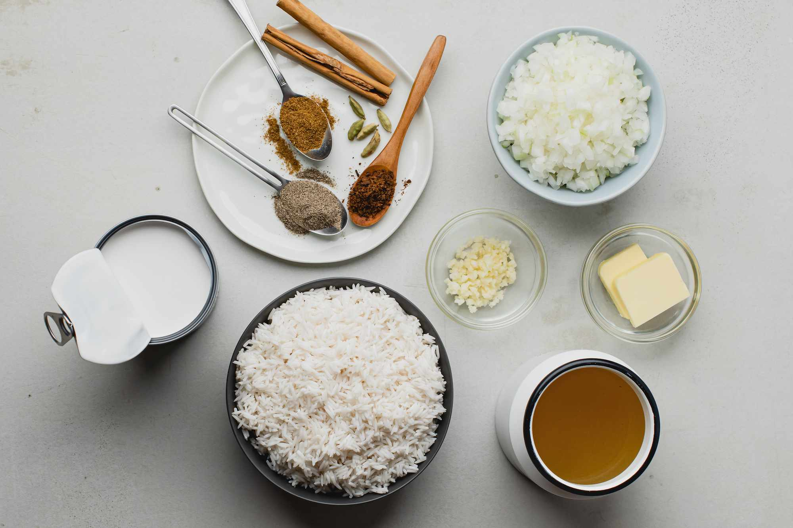
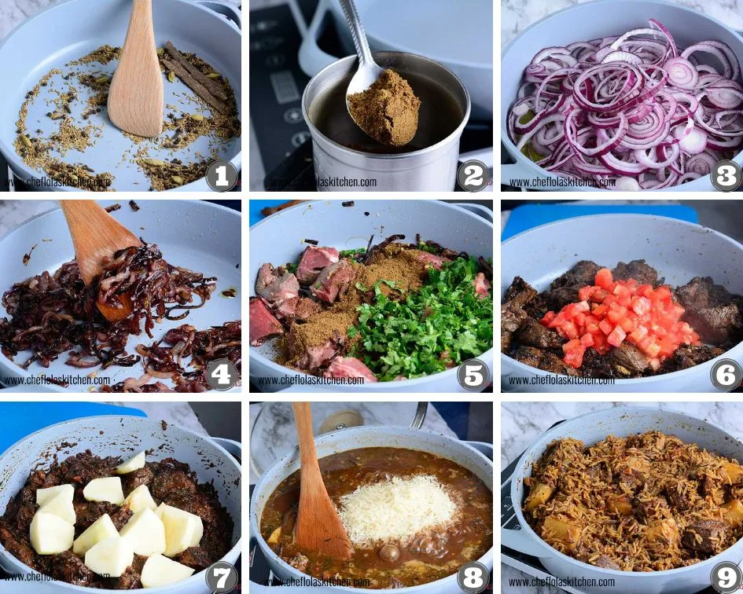

RECIPE FOR MAKING RICE PILAU.
brief understandig of what is rice pilau
Rice pilau is a fragrant tasty one-pot dish made with caramelized beef with rice and potato cooked in a rich and delicious meat or chicken broth.
Pelau is delicious on its own and can be served as a stand-alone meal, however, if you want a full Kenyan experience simply pair with Kachumbari – a cool and refreshing salad made with tomatoes, red onions, cilantro and a spicy pepper like serrano chili pepper.

Pilau has a wonderful balance of flavors. It is a festive dish, which is never missing during special occasions or events. It’s made with rice cooked in a well-seasoned broth of Meat or chicken. Unlike the Indian pilau, the East African version does not use curry and it’s less spicy.
Rice is, without a doubt, one of my favorite food in the world. Not only is it my to-go dish when I need to prepare a quick meal, but it can easily be turned into an elegant dish for special occasions.
ingredients need to make rice pilau
- 1 tbs Vegetable Oil
- 1 tsp Turmeric
- 1 tsp Cumin Seeds
- small piece Cinnamon Stick
- 5 Cardamom pods
- 1 cup Basmati Rice (200g)
- 2 cups Vegetable Stock or Broth (480ml)
- water
- 2 Bay leaves

procedure of cooking the rice pilu
- Toast and blend the pilau masala: In a medium saucepan over medium heat.
- Brown the onions by frying it in oil until it caramelizes. This should take about 10 to 15 minutes. Stir in the Garlic, ginger and serrano pepper.
- Add the meat stock cubes, pilau masala, cilantro, bay leaves, and salt to taste and brown the meat for about
- Stir in the tomatoes and cook till it dissolves. Then stir in the potatoes.
- Add water and bring everything to a rolling boil and leave the potatoes to cook for about 10 minutes.
- Stir in the rice then cover tightly. You can use an aluminum foil to cover it first, this will help keep the steam in. Then place the lid over it and leave to cook on a low heat for 20 minutes until the liquid has been absorbed.
- Serve hot! You can sprinkle the rice pilaf with some chopped cilantro, then fluff with a fork. Enjoy.
